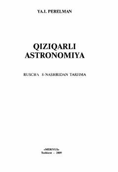

QAAstronomiya fanining qiziqarli va hayratlanarli sirlari haqida ilmiy-ommabop qo'llanma.
Ushbu kitobda astronomiyaning asosiy qonuniyatlari va yulduzli osmonda sodir bo'ladigan hodisalar sodda hamda qiziqarli tilda tushuntiriladi. Muallif kundalik hayotda uchraydigan hodisalarning ilmiy mohiyatini ochib berib, kitobxonlarda koinotga nisbatan qiziqish uyg'otishni maqsad qilgan.